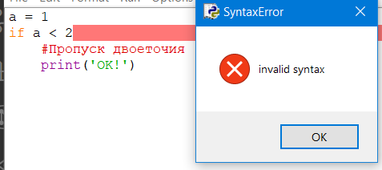
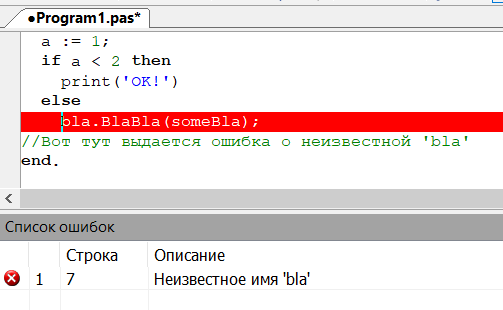
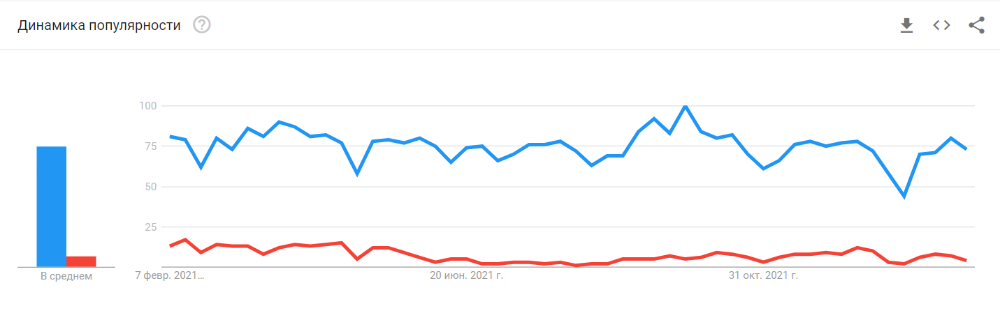

Сейчас Python становится очень популярным языком программирования среди школьников, так или иначе интересующихся информатикой.
Однако в школьной программе информатики этому языку программирования уделяют очень мало времени, может даже вообще к нему не прикасаются - всё время уходит на Pascal, основой практически всех языков программирования. В этот статье мы сравним оба этих языка и узнаем, какой язык лучше и в каких аспектах.
Примечание. Особо углубляться в сравнение языков, к примеру сравнивать принцип ввода и циклов, мы не будем, это тема для углублённого обучения
Синтаксис
Очевидно, что Python выходит вперёд - его до лёгкости простой синтаксис является новинкой в мире программирования. А необходимость в оступах делает код чище и понятнее.
Однако требования Pascal к использованию begin...end обучает новичков блочной структуре кода, которая существует в большинстве языках (например {...} в С и Java
a =
s = a*a
p =
d = math.sqrt(
read(a);
s := a*a;
p := 4*a;
d := sqrt(2)*a;
print(s, p, d);
Обратите внимание, что в языке PascalABC.NET (где и обучаются большинство российских школ) можно писать и в питоновском формате, начиная код с двух решёток ##
Скорость выполнения программ
Тут конечно Python не фаворит. В сравнении с Pascal, Python выполняет программы в 50, 100 раз медленнее, чем его опонент. Проверим же это на практике.
Ниже будут приведены примеры одиннаковых программ, ищущих количество простых чисел в диапазоне от 2 до 100 000
#Python import time count =0 start = time.time()#Записываем текущее время i for in range (2, 100000): flag =True n for in range (2, i): flag = i % n !=0 if not flag:break flag: count += if 1 #Выводим количество чисел и время работы программы #Вывод: 9592 36.37482666969299
//Pascal var i, n, count :integer ; Flag :boolean ;begin for i :=2 to 100000 do begin Flag :=True ;for n :=2 to i-1 do begin Flag := imod n <>0 ;if not Flagthen break ;end; if Flagthen count := count +1 ;end; print(count, Milliseconds/1000 );//Выводим количество чисел и время работы программы end. //Вывод: 9592 1.736
Судя по времени работы обеих программ, Pascal быстрее Python в 20,95 раз! Поэтому Python не используется часто в сложных и больших задачах, так как время работы может затянуться на минуты.
Проблема компилятора (порядка выполнения команд)
У каждого языка программирования есть специальная программа, которая проверяет правильность кода и переводит его на машинный язык, который понимает компьютер. Такие программы называются "компиляторами", и у каждого языка он свой.
Особенность компилятора Python в том, что он проверяет ту часть кода, которая должна выполняться, а не всю программу. Чтобы было понятнее, приведу пример с "неправильной" функцией Bla()
#Python a =1 a < if 2 :: bla.BlaBla(someBla); else #Программа работает чётко и без перебоев, игнорируя часть else
//Pascal var a:integer ;begin a :=1 ;if a <2 then print('OK!' )else > bla.BlaBla(someBla);//Вот тут выдается ошибка о неизвестной 'bla' end.
То есть Pascal относится более строже к коду, нежели Python, но у этой "особенности" второго есть и свои плюсы. С одной стороны, новички не тратят особо много времени на исправлении маленькой проблемы кода, но с другой - это грубейшая ошибка, имеющая свои последствия
Вывод ошибок
Раз мы уже заговорили про ошибки, сравним способы их вывода на экран. Информативная информатиция об ошибке - главное оружие программиста к исправлению багов и недоработков, это надо учитывать при сравнении.
Вообще в Python существует два способа вывести ошибку - всплывающее окно или в консоли IDLE (см. рис).
Ошибки в Pascal более информативные и показывают саму суть ошибки прямо в коде (см. рис.), что позволяет найти источник бага.
Языки на рынке
В этом разделе мы проанализируем Python и Pascal с точки зрения рынка труда и популярности в Интернете. И здесь результаты более чем очевидные, Python выходит далеко вперёд.
И под "далеко" я имею в виду это:
Да, по данным Google Trends за последние 12 месяцев Python'ом интересуются на 1071% больше людей, нежели Pascal. И это неудивительно - второй язык уже считают "мёртвым", чисто из-за существования достойных альтернатив.
Рассмотрим другой пример. Согласно данным сайта hh.ru, сущевствуют около 180 вакансий разработчиков на Pascal против 7300 на Python (и тем более от крупных компаний, например Сбера или Точки).
Интересный факт: согласно рейтингу TIOBE Python носит звание "Язык года" уже второй год подряд, вытиснув "гигантов" Java и C
Итоги
Из приведённых выше аргументов можно сделать вывод, что оба языка программирования хороши по своему. Pascal идеально подходит для самых новичков в программировании, которые ещё не знают про основы языков, блочную структуру и типипизацию данных. Именно Pascal является "няней", переходным моментом для дальнейшего, более глубокого обучения какого-то другого языка.
Python же просто хорош во всём. Для совсем новичков он, конечно, подходит слабо, но он раскрывает себя именно тогда, когда самые основы изучены и необходимо двигаться дальше. Python завоевал сердца многих программистов с помощью гибких и разносторонних библиотек, с помощтю которых можно сделать всё что угодно: сайты, игры, искуственные интелекты, нейросети и ещё многое другое.